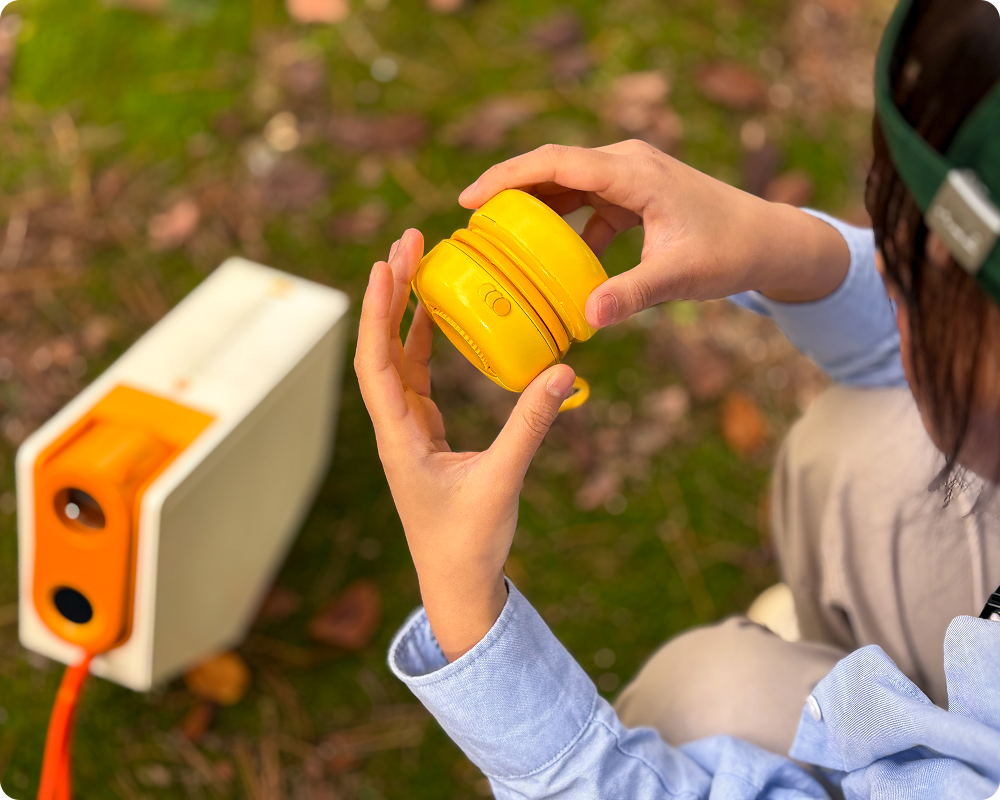

아이들은을
ROLL을 손에 끼우거나 굴리고,
공중에서 돌리거나 비스듬하게 회전시키며 운동 에너지를 모읍니다.
익숙한 놀이 동작 속에서 발생하는 힘이 전기로 전환되어,
움직임 그 자체가 에너지 생성의 과정이 됩니다.
아이들은을
ROLL을 손에 끼우거나 굴리고,
공중에서 돌리거나 비스듬하게 회전시키며 운동 에너지를 모읍니다.
익숙한 놀이 동작 속에서 발생하는 힘이 전기로 전환되어,
움직임 그 자체가 에너지 생성의 과정이 됩니다.
아두이노와 INA219 센서가 태양광의 세기를 실시간으로 측정해,
이 데이터를 본체로 전달하며 빛의 에너지를 전송합니다.
FOCUS는 이 흐름을 통해 태양의 에너지를 데이터로 재구성합니다.